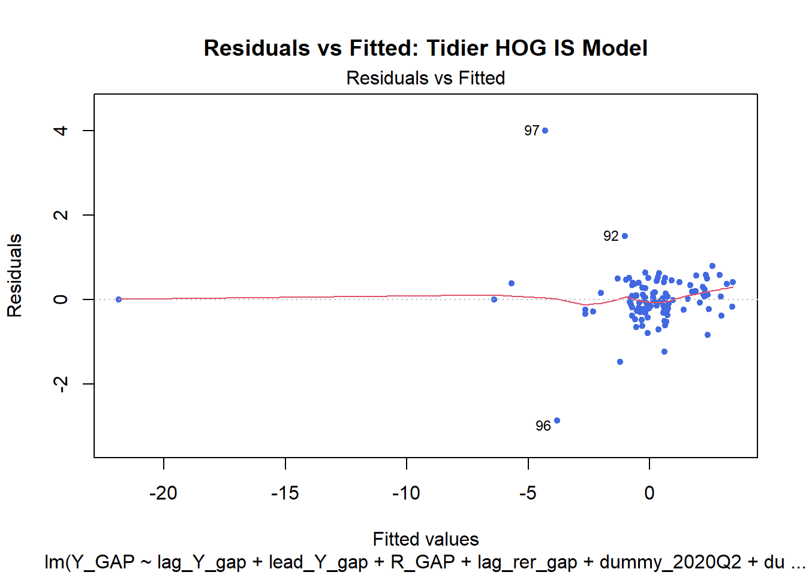
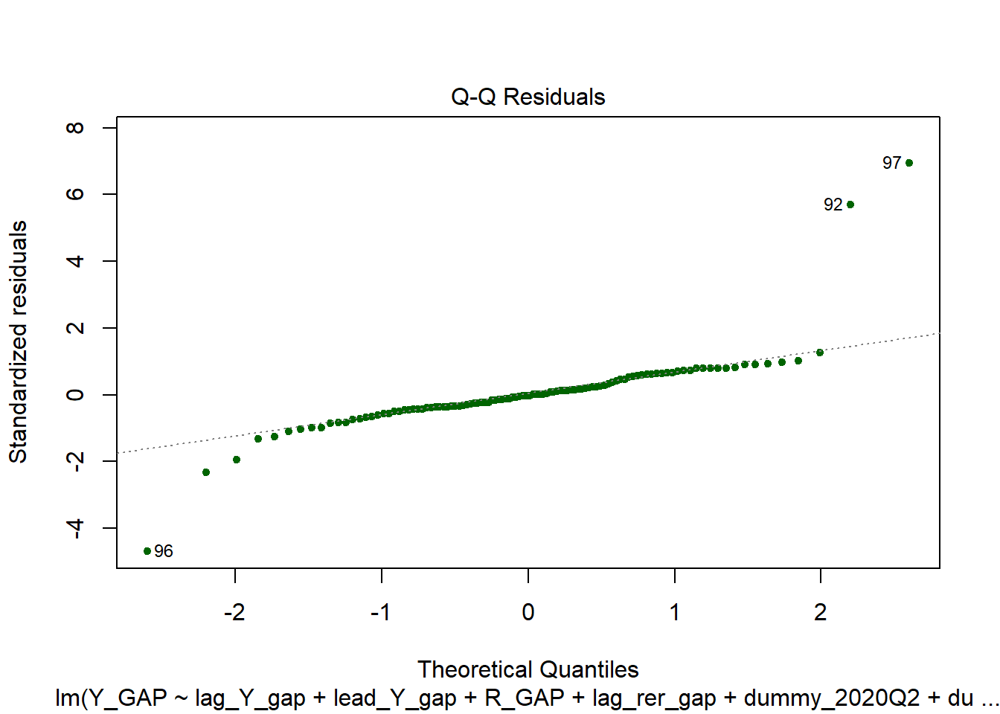

Working Paper No. 1 - Stage 1: System Estimation and Preliminary Forecasting
Author
Oliver Hogan
Published
March 18, 2026
1 Introduction
Our starting point is Scarth’s specification of the Mundell-Fleming model. We move on to consider rationally formed exchange rate expectations. Dornbusch (1976) shows that overshooting in the exchange rate can easily occur in a model in which exchange rates adjust at a faster pace than goods prices. Product prices that are sluggish (and cannot adjust in the short run as much as they can in the long run) can force more adjustment in the exchange rate in the short run than is required in the long run.
Dornbusch extends the perfect capital mobility version of the Mundell-Fleming model to allow for forward-looking exchange rate expectations and interprets the resulting overshooting as explaining exchange rate volatility. This is the subject of Scarth (1988), Ch. 9.2. For pedagogic reasons, Scarth deals with the supply-side effects of exchange rates and resolution of the stocks vs. flows in the balance of payments issue through separate models in which the restriction that was relaxed in the preceding analysis is re-applied in the subsequent analysis. This is where we depart from Scarth for the moment but he points us in the right direction, noting that Buiter and Miller (1982) have made significant progress in combining all of these features in one model.
Buiter and Miller’s NBER paper is impressive and was developed with the UK economy in mind. Specifically, Niehans (1983) in his comment on the paper notes that it can generally be regarded as an effort to apply the “underemployment version of Dornbusch’s exchange dynamics model to the stylised facts of British monetary policy”.
The paper, titled Real Exchange Rate Overshooting and the Output Cost of Bringing Down Inflation, develops a structural model to explain the UK’s experience with high interest rates and a strong pound. It provides a continuous-time framework for analysing exchange rate and inflation dynamics. The core of the model consists of five key equations covering money market equilibrium, aggregate demand, price evolution, core inflation, and uncovered interest parity. The model, a variation of the Dornbusch overshooting model, features sticky prices and jump variables, with nominal exchange rates and trend inflation adjusting instantly to shocks.
While it is of particular relevance to the Thatcher-era reforms, the work remains a foundational reference for modern structural analyses of the UK economy. The principles of the Buiter-Miller model (nominal stickiness with rational expectations in financial markets) using updated New Keynesian DSGE frameworks. The OBR’s “Small Model of the UK Economy” (used to simulate fiscal and monetary shocks) might reasonably be viewed as a contemporary structural successor, incorporating similar elements like exchange rate pass-through and inflation persistence, but evolving the Buiter-Miller logic into a four-equation New Keynesian framework. We have tethered our analysis to the OBR framework, but have sought to adapt it where required to better fit the data.
2 The IS relation
2.1 Theoretical model specification
In our open-economy IS Curve, aggregate demand depends on expected future output, real interest rates, and the real exchange rate (the expenditure-switching effect): \[y_t = \beta_y y_{t+j|t} - \rho(i_t - \pi_{t+j|t} - r^*) + \beta_{er} er_{t+j|t} + \mu_t\]\(y_{t}\) is the output gap at time \(t\)
\(y_{t+j|t}\) is the expectation in time \(t\) of the output gap in a future period \(t+j\),
\(i_t - \pi_{t+j|t} - r^*\) is the expected real interest rate gap (the construction of which is outlined further below), analagous to the \(z_{t+j|t}\) term from Murray (2012) but we make alternative use of \(z\) below to include a gilt spread on the base rate;
\(\rho\) represents the inter-temporal elasticity of substitution, which scales the impact (sensitivity) of output to real interest rates. (It is equivalent to Murrary (2012)’s \(\beta_z\), his coefficient on \(z_{t+j|t}\);
\(er_{t+j|t}\) is the expected change in the real exchange rate; and
Note [to SELF?]: The forward-looking specification of the exchange rate term \(er_{t+j|t}\) is appropriate if we want to model how expected future currency strength influences today’s investment and export orders. The spot rate \(er_t\) is more appropriate if we want to model how today’s prices affect trade competitiveness immediately.
2.2 Comparison with OBR model
Given the structure of our IS relation, it is important to note that we are implicitly making the jump from the baseline consumption Euler equation (arising from the optimising behaviour of the representative household1) to a whole-economy IS equation and, thus, making the same assumption as Murray (2012) that the behaviour of the household consumer can explain whole economy behaviour. While this remains common [TBC], at least in small models, it is a huge simplification in the light of heterogenous households and firms and the contribution of business and inventory investment to the cyclical volatility of output.
Moving from this small model specification to a more comprehensive DSGE model will require the behaviour of firms to be derived from microeconomic foundations but the assumption is sufficiently intuitive for our current purposes. As Murrary notes, the change in output associated with firms’ responses to changes in real interest rates is in the same direction as that implied by the response of households. If the real rate of interest falls, this lowers the cost of borrowing and increases the overall rate of return of an investment project. Therefore, any profit-maximising firm has a greater incentive to invest., in the same way that a consumer has a greater incentive to increase consumption today (because it is less expensive to delay it till tomorrow or, equivalently, less worthwhile to save).2
Our vs. Murrary’s treatment of interest rate gap coefficient…
The \(z_{t+j|t}\) in Murray’s model is likely a significantly richer version of our real interest rate gap, as it incorporates credit risk premia and unconventional monetary policy and is therefore a spread variable that captures more than just the Bank of England’s base rate.
Data…period…
Murray’s exchange rate term (\(er\)) includes a term for changes in the trade-weighted real effective exchange rate, which is intended to capture the effect on output of changes in relative prices which serve to shift the allocation of resources to and from the export-facing sector. Ours is a little less precise. We start with the sterling nominal effective exchange rate index and deflate using the import deflator as the ‘foreign’ price proxy, which expresses it in real terms. This is log-transformed and established as a deviation from the long-term trend. This lagged real exchange rate gap reflects the time delay in the expenditure switching effect. (We note the potential bias associated with the import deflator calculated based on sterling-denominated trade data ??? CHECK ACCURACY / CORRECTNESS)
Also implicit in our approach are the simplifications Murrary (2012) highlights in respect of the role of uncertainty and irreversible costs in investment decision-making. Extensions of the simple model to address these shortcomings feature in Leahy and Whited (1995) and Pyndick and Solimano (1993). We assume that it is still valid to claim, as Murray (2012) does, that while the model does not address uncertainty explicitly, the cyclicality of business investment and its contribution to output volatility should already be captured in the IS relation, to the extent that the investment decision is dependent on the real interest rate gap. [AVENUE FOR EXPLORATION: split business investment out of GDP?]
Aggregating the consumption Euler equation to the whole economy level gave Murrary (2012) the forward-looking equation below.
In this equation, \(y_{t}\) is the output gap, \(y_{t+j|t}\) is the expected output gap at time \(t\), \(z_{t+j|t}\) is the expected real interest rate gap, \(er_{t+j|t}\) is the expected change in exchange rate and \(\mu_{t}\) independent, identically-distributed aggregate demand shock.
This ‘small model’ approach is not without its strengths, particularly the strong micro foundations (through’deep’ structural parameters) underpinning the output equation, which is based on optimising behaviour and, as such, should be robust to policy changes.3 But representative agent theory is not without its flaws. While it saves having to capture the complex and unpredictable behaviours of millions of individual agents for aggregation to the macro economy, heterogeneity and how this can impact on the aggregate picture of behaviour is not always addressed. [what is the latest on this? PROBABLY ANOTHER NECESSITY FOR DSGE?] Like Murrary (2012), we accept that the validity of aggregation contributes to the uncertainties associated with a model that already dramatically simplifies reality.
2.3 ‘Same old’ challenges with rational expectations
[CONFIRM WE ENCOUNTERED THIS PROBLEM IN DEVELOPING 3SLS…] The second criticism of the IS relation concerns the assumption of rational expectations. Estimated forward-looking IS relations tend to underperform simple autoregressive models and, quite often, little empirical support is found for the relationship between output and expected real interest rates.9 This is partly because the output gap moves with a degree of inertia that is inconsistent with the adjustment paths implied by forward-looking, rational expectations models. In these models, it is the rational but immediate adjustment of households’ expectations to innovations which implies a jump response in consumption, which, in practise, is rarely seen in the data.
Some attempts have been made to explain why consumption reacts so slowly in response to changes in interest rates. One such endeavour is the habit formation model of Fuhrer (2000). Fuhrer postulates that the utility derived from consumption depends both on the absolute level of consumption and the level of current consumption relative to past consumption – that households do not like consuming less than they have been and initially resist changes, before eventually adjusting. This modification was shown to substantially improve the fit of the model.10
Other work, predominantly concerned with why the behaviour of consumption appears to invalidate the permanent income hypothesis, such as Muellbauer (1988), suggests that households may be myopic in their consumption choices. Campbell and Mankiw (1989) offer the hypothesis that households do not have the resources to engage in producing full forecasts and so it is optimal for them to use a rule of thumb when updating their consumption plans in response to income shocks.
That lagged output improves the fit with the data is important, but whether one accepts the habit formation story, the rule of thumb hypothesis or simply assumes that households are less forward-looking than is often suggested, is less important for the specification of the IS relation. In empirical work, an assumption of habit formation or myopia in household consumption choices is not uncommon and both Batini and Haldane (1999) and Smets and Wooters (2003) allow for it in their respective models of the UK and the euro area economies. Indeed, neither Batini and Haldane nor Carlin and Soskice (2010) include expected output in their baseline IS relations, an approach which I follow here. Therefore, the baseline IS relation employed here includes lags of output, real interest rates and exchange rates but not expectations thereof: \[ y_{t} = \beta_y y_{t-j|t} + \beta_r z_{t-j|t} + \beta_{er} er_{t-j} + \mu_{t} \]
2.4 Empirical model specification
We amend our theoretical equation in a likewise fashion:
THis leads to our expirical specification. All variables (unless otherwise noted) are expressed as log-deviations from their steady-state trends. Aggregate demand depends on expected future output, real interest rates, and the real exchange rate (the expenditure-switching effect):
\(y_{t}\) is the output gap, or the percentage deviation of real (chained volumes measure of) GDP at market prices from its long-term cyclical trend4.
\(y_{t-1}\) is the lagged output gap (reflecting output trend persistence) and \(y_{t+1|t}\) is a lead output gap (to take account of future output expectations).
\(r_t\)is the real interest rate gap \(R_{GAP} = r^{base} - r^{*} = i_t - \pi_{t+j|t} - r^*\). We start with the official real bank rate, which is the nominal BOE base rate minus annualised quarterly inflation [log(CPI) / lag(CPI)]. We calculated the trend of GDP growth to establish \(r^*\) and subtracted that from the real bank rate. This real interest rate gap represents the monetary policy stance; a positive value indicating restrictive policy (leaning against the wind), while a negative value indicates accommodative policy.
\(z\) is the spread on the nominal par value of 5-year gilt yields over and above (or below) the nominal base rate (so \(i^{mkt} = i^{base} + z\)), which we include in the analysis to account for the zero lower bound issue.
\(\mathbb{1}_{ZLB}\) is a binary dummy variable equal to one when the bank rate is at its effective lower bound (0.1-0.5) and zero otherwise. This makes \(\beta_5\) an interaction coefficient - the additional impact of the market spread on the output gap when conventional policy is constrained.5
\(x_{t}\) is the change in net exports or, more precisely, the difference between the log-differenced CVMs of exports and imports at market prices. Net export growth can be volatile, so accounting for the contribution of each to the overall change before combining them helps smooth the data.
\(er_{t-1}\) is the lagged real exchange rate gap.
\(\mathbf{D} \cdot \gamma_{IS}\) represents a set of pulse dummy variables for the Covid-19 shock.
\(\epsilon_{y,t}\) is the model’s error term.
Sign Expectations: Note that while \(\beta_3\) (real rate) and \(\beta_4\) (spread) should be negative (tighter conditions = lower output), \(\beta_6\) (real exchange rate) should be positive if an increase in the index represents a depreciation (making exports cheaper).
plot(hog_is_fit_1, which =1, col ="royalblue", pch =20, main ="Residuals vs Fitted: Tidier HOG IS Model")

plot(hog_is_fit_1, which =2, col ="darkgreen", pch =20)
Warning: not plotting observations with leverage one:
93, 94

car::durbinWatsonTest(hog_is_fit_1)
lag Autocorrelation D-W Statistic p-value
1 -0.05045058 2.097277 0.75
Alternative hypothesis: rho != 0
This removes non-significant terms and produces a better, more parsimonious result, for the following reasons:
Increased Precision (Lower Standard Errors): on the output and interest rate gaps.
Higher Adjusted R-squared: While the Multiple R-squared dropped slightly (0.9482 to 0.947), the Adjusted R-squared actually went UP (0.9435 to 0.9439). This suggests that the variables we removed weren’t adding enough explanatory power to justify their inclusion.
Stronger Significance for Exchange Rates: The lagged real exchange rate gap p-value improved (from 0.0186 to 0.0136) and suggests that removing the net exports term permits the impact of the real exchange rate to be seen more clearly. This suggests the price effect (exchange rate) is a more reliable lead indicator for UK aggregate demand than the volatile volume data (net exports). This makes the argument for the “expenditure-switching” effect in the UK much more statistically robust.
Leaner: it retains the “hybrid” structure (lag and lead output gaps) and the essential policy tools (Interest rate gap and exchange rate gap). This matches the core of the OBR Murray (2012) logic without the empirical “clutter.”
What the model suggests is that the UK output gap is driven by strong internal momentum (0.74), forward-looking expectations (0.17), a sensitive response to real interest rate deviations (-0.04), and a delayed boost from currency depreciation (0.03)6.
2.5
3
Footnotes
The consumption Euler equation simply states that, in equilibrium, the representative household is unable to increase its utility by shifting consumption between periods – that is, the marginal utility of consumption today is balanced with the discounted marginal utility of consumption tomorrow.↩︎
The fact that Tobin’s Q operates in a similar way is noted. Lower expected interest rates decrease the rate at which income streams are discounted, increasing the valuation of companies’ net assets. When the market value of assets exceeds the book value, there is a profit opportunity and companies expand their investment until such a time that book prices are equal to market prices. The alternative interpretation is also relevant - as Scarth notes - invest as long as the marginal product of capital its rental cost (interest plus depreciation, or the return on and of capital). Scarth notes that Tobin (1969) prefers the former.↩︎
The Lucas Critique prompted the development of these models. Lucas (1976) pointed to the weakness of the traditional approach to macroeconomic modelling in relying on an assumption of stability in the statistical relationships between variables.↩︎
Using Hodrick-Prescott filter for time series, which extracts the cyclical component.↩︎
Away from the ZLB, a rising gilt spread might be offset by the Bank of England lowering the base rate. At the ZLB, this “offset” is impossible. The interaction term allows the model to show that a credit crunch is more damaging when rates are already at zero. Unconventional Policy Proxy: In Murray’s logic, \(z_t\)captures the effects of Quantitative Easing (QE). By using the interaction, you can explicitly model whether QE-led reductions in the gilt spread were more or less effective than standard rate cuts. Non-Linearity: This shift from a linear model to a “regime-switching” model better reflects the reality that the UK economy behaves differently when “constrained” by the lower bound.↩︎
A positive coefficient on a lagged real exchange rate (RER) gap represents an improvement in competitiveness and, therefore, a boost (albeit modest) to growth. [NOTES TO SELF BECAUSE I ALWAYS GET MIXED UP WITH EXCHANGE RATE MOVES, DESPITE GETTING A FIRST IN BOTH ECONOMIC THEORY AND INTERNATIONAL ECONOMICS!]
The “RER gap” is defined such that a positive value indicates undervaluation (or a real depreciation relative to the equilibrium). A positive coefficient (0.03) means that a 1% depreciation in the previous period leads to a 0.03% increase in the current target variable. The lag accounts for the time it takes to transmit to the real economy through, e.g., the J-curve effect or shipping / contractual delays. According to BoE, this is typical of these kinds of small models - a statistically significant but modest transmission from the currency to the real economy. Transmission (to GDP and inflation):
Export Competitiveness: A real depreciation makes domestic goods cheaper for foreigners, eventually increasing export volumes and boosting aggregate demand.
Inflationary Pressure: Depreciation also increases the cost of imports, which can “boost” inflation (pass-through effect).